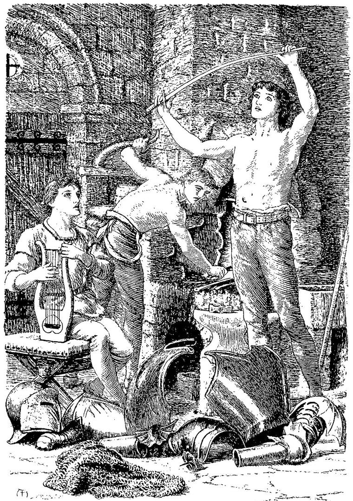

Was but thy appetite that swayed thy blood
For that time to the best; for as a blast
That through a house comes, usually doth cast
Things out of order, yet by chance may come
And blow some one thing to his proper room,
So did thy appetite, and not thy zeal,
Sway thee by chance to do some one thing well.”
FLETCHER’S Faithful Shepherdess.
And is with childe of glorious great intent,
Can never rest, until it forth have brought
Th’ eternall brood of glorie excellent.”
SPENSER, The Faerie Queene.
I had not gone very far before I felt that the turf beneath my feet was soaked with the rising waters. But I reached the isthmus in safety. It was rocky, and so much higher than the level of the peninsula, that I had plenty of time to cross. I saw on each side of me the water rising rapidly, altogether without wind, or violent motion, or broken waves, but as if a slow strong fire were glowing beneath it. Ascending a steep acclivity, I found myself at last in an open, rocky country. After travelling for some hours, as nearly in a straight line as I could, I arrived at a lonely tower, built on the top of a little hill, which overlooked the whole neighbouring country. As I approached, I heard the clang of an anvil; and so rapid were the blows, that I despaired of making myself heard till a pause in the work should ensue. It was some minutes before a cessation took place; but when it did, I knocked loudly, and had not long to wait; for, a moment after, the door was partly opened by a noble-looking youth, half-undressed, glowing with heat, and begrimed with the blackness of the forge. In one hand he held a sword, so lately from the furnace that it yet shone with a dull fire. As soon as he saw me, he threw the door wide open, and standing aside, invited me very cordially to enter. I did so; when he shut and bolted the door most carefully, and then led the way inwards. He brought me into a rude hall, which seemed to occupy almost the whole of the ground floor of the little tower, and which I saw was now being used as a workshop. A huge fire roared on the hearth, beside which was an anvil. By the anvil stood, in similar undress, and in a waiting attitude, hammer in hand, a second youth, tall as the former, but far more slightly built. Reversing the usual course of perception in such meetings, I thought them, at first sight, very unlike; and at the second glance, knew that they were brothers. The former, and apparently the elder, was muscular and dark, with curling hair, and large hazel eyes, which sometimes grew wondrously soft. The second was slender and fair, yet with a countenance like an eagle, and an eye which, though pale blue, shone with an almost fierce expression. He stood erect, as if looking from a lofty mountain crag, over a vast plain outstretched below. As soon as we entered the hall, the elder turned to me, and I saw that a glow of satisfaction shone on both their faces. To my surprise and great pleasure, he addressed me thus:
“Brother, will you sit by the fire and rest, till we finish this part of our work?”
I signified my assent; and, resolved to await any disclosure they might be inclined to make, seated myself in silence near the hearth.
The elder brother then laid the sword in the fire, covered it well over, and when it had attained a sufficient degree of heat, drew it out and laid it on the anvil, moving it carefully about, while the younger, with a succession of quick smart blows, appeared either to be welding it, or hammering one part of it to a consenting shape with the rest. Having finished, they laid it carefully in the fire; and, when it was very hot indeed, plunged it into a vessel full of some liquid, whence a blue flame sprang upwards, as the glowing steel entered.
There they left it; and drawing two stools to the fire, sat down, one on each side of me.
“We are very glad to see you, brother. We have been expecting you for some days,” said the dark-haired youth.
“I am proud to be called your brother,” I rejoined; “and you will not think I refuse the name, if I desire to know why you honour me with it?”
“Ah! then he does not know about it,” said the younger. “We thought you had known of the bond betwixt us, and the work we have to do together. You must tell him, brother, from the first.”
So the elder began:
“Our father is king of this country. Before we were born, three giant brothers had appeared in the land. No one knew exactly when, and no one had the least idea whence they came. They took possession of a ruined castle that had stood unchanged and unoccupied within the memory of any of the country people. The vaults of this castle had remained uninjured by time, and these, I presume, they made use of at first. They were rarely seen, and never offered the least injury to any one; so that they were regarded in the neighbourhood as at least perfectly harmless, if not rather benevolent beings. But it began to be observed, that the old castle had assumed somehow or other, no one knew when or how, a somewhat different look from what it used to have. Not only were several breaches in the lower part of the walls built up, but actually some of the battlements which yet stood, had been repaired, apparently to prevent them from falling into worse decay, while the more important parts were being restored. Of course, every one supposed the giants must have a hand in the work, but no one ever saw them engaged in it. The peasants became yet more uneasy, after one, who had concealed himself, and watched all night, in the neighbourhood of the castle, reported that he had seen, in full moonlight, the three huge giants working with might and main, all night long, restoring to their former position some massive stones, formerly steps of a grand turnpike stair, a great portion of which had long since fallen, along with part of the wall of the round tower in which it had been built. This wall they were completing, foot by foot, along with the stair. But the people said they had no just pretext for interfering: although the real reason for letting the giants alone was, that everybody was far too much afraid of them to interrupt them.
“At length, with the help of a neighbouring quarry, the whole of the external wall of the castle was finished. And now the country folks were in greater fear than before. But for several years the giants remained very peaceful. The reason of this was afterwards supposed to be the fact, that they were distantly related to several good people in the country; for, as long as these lived, they remained quiet; but as soon as they were all dead the real nature of the giants broke out. Having completed the outside of their castle, they proceeded, by spoiling the country houses around them, to make a quiet luxurious provision for their comfort within. Affairs reached such a pass, that the news of their robberies came to my father’s ears; but he, alas! was so crippled in his resources, by a war he was carrying on with a neighbouring prince, that he could only spare a very few men, to attempt the capture of their stronghold. Upon these the giants issued in the night, and slew every man of them. And now, grown bolder by success and impunity, they no longer confined their depredations to property, but began to seize the persons of their distinguished neighbours, knights and ladies, and hold them in durance, the misery of which was heightened by all manner of indignity, until they were redeemed by their friends, at an exorbitant ransom. Many knights have adventured their overthrow, but to their own instead; for they have all been slain, or captured, or forced to make a hasty retreat. To crown their enormities, if any man now attempts their destruction, they, immediately upon his defeat, put one or more of their captives to a shameful death, on a turret in sight of all passers-by; so that they have been much less molested of late; and we, although we have burned, for years, to attack these demons and destroy them, dared not, for the sake of their captives, risk the adventure, before we should have reached at least our earliest manhood. Now, however, we are preparing for the attempt; and the grounds of this preparation are these. Having only the resolution, and not the experience necessary for the undertaking, we went and consulted a lonely woman of wisdom, who lives not very far from here, in the direction of the quarter from which you have come. She received us most kindly, and gave us what seems to us the best of advice. She first inquired what experience we had had in arms. We told her we had been well exercised from our boyhood, and for some years had kept ourselves in constant practice, with a view to this necessity.
“‘But you have not actually fought for life and death?’ said she.
“We were forced to confess we had not.
“‘So much the better in some respects,’ she replied. ‘Now listen to me. Go first and work with an armourer, for as long time as you find needful to obtain a knowledge of his craft; which will not be long, seeing your hearts will be all in the work. Then go to some lonely tower, you two alone. Receive no visits from man or woman. There forge for yourselves every piece of armour that you wish to wear, or to use, in your coming encounter. And keep up your exercises. As, however, two of you can be no match for the three giants, I will find you, if I can, a third brother, who will take on himself the third share of the fight, and the preparation. Indeed, I have already seen one who will, I think, be the very man for your fellowship, but it will be some time before he comes to me. He is wandering now without an aim. I will show him to you in a glass, and, when he comes, you will know him at once. If he will share your endeavours, you must teach him all you know, and he will repay you well, in present song, and in future deeds.’
“She opened the door of a curious old cabinet that stood in the room. On the inside of this door was an oval convex mirror. Looking in it for some time, we at length saw reflected the place where we stood, and the old dame seated in her chair. Our forms were not reflected. But at the feet of the dame lay a young man, yourself, weeping.
“‘Surely this youth will not serve our ends,’ said I, ‘for he weeps.’
“The old woman smiled. ‘Past tears are present strength,’ said she.
“‘Oh!’ said my brother, ‘I saw you weep once over an eagle you shot.’
“‘That was because it was so like you, brother,’ I replied; ‘but indeed, this youth may have better cause for tears than that—I was wrong.’
“‘Wait a while,’ said the woman; ‘if I mistake not, he will make you weep till your tears are dry for ever. Tears are the only cure for weeping. And you may have need of the cure, before you go forth to fight the giants. You must wait for him, in your tower, till he comes.’
“Now if you will join us, we will soon teach you to make your armour; and we will fight together, and work together, and love each other as never three loved before. And you will sing to us, will you not?”
“That I will, when I can,” I answered; “but it is only at times that the power of song comes upon me. For that I must wait; but I have a feeling that if I work well, song will not be far off to enliven the labour.”
This was all the compact made: the brothers required nothing more, and I did not think of giving anything more. I rose, and threw off my upper garments.
“I know the uses of the sword,” I said. “I am ashamed of my white hands beside yours so nobly soiled and hard; but that shame will soon be wiped away.”
“No, no; we will not work to-day. Rest is as needful as toil. Bring the wine, brother; it is your turn to serve to-day.”
The younger brother soon covered a table with rough viands, but good wine; and we ate and drank heartily, beside our work. Before the meal was over, I had learned all their story. Each had something in his heart which made the conviction, that he would victoriously perish in the coming conflict, a real sorrow to him. Otherwise they thought they would have lived enough. The causes of their trouble were respectively these:
While they wrought with an armourer, in a city famed for workmanship in steel and silver, the elder had fallen in love with a lady as far beneath him in real rank, as she was above the station he had as apprentice to an armourer. Nor did he seek to further his suit by discovering himself; but there was simply so much manhood about him, that no one ever thought of rank when in his company. This is what his brother said about it. The lady could not help loving him in return. He told her when he left her, that he had a perilous adventure before him, and that when it was achieved, she would either see him return to claim her, or hear that he had died with honour. The younger brother’s grief arose from the fact, that, if they were both slain, his old father, the king, would be childless. His love for his father was so exceeding, that to one unable to sympathise with it, it would have appeared extravagant. Both loved him equally at heart; but the love of the younger had been more developed, because his thoughts and anxieties had not been otherwise occupied. When at home, he had been his constant companion; and, of late, had ministered to the infirmities of his growing age. The youth was never weary of listening to the tales of his sire’s youthful adventures; and had not yet in the smallest degree lost the conviction, that his father was the greatest man in the world. The grandest triumph possible to his conception was, to return to his father, laden with the spoils of one of the hated giants. But they both were in some dread, lest the thought of the loneliness of these two might occur to them, in the moment when decision was most necessary, and disturb, in some degree, the self-possession requisite for the success of their attempt. For, as I have said, they were yet untried in actual conflict. “Now,” thought I, “I see to what the powers of my gift must minister.” For my own part, I did not dread death, for I had nothing to care to live for; but I dreaded the encounter because of the responsibility connected with it. I resolved however to work hard, and thus grow cool, and quick, and forceful.
The time passed away in work and song, in talk and ramble, in friendly fight and brotherly aid. I would not forge for myself armour of heavy mail like theirs, for I was not so powerful as they, and depended more for any success I might secure, upon nimbleness of motion, certainty of eye, and ready response of hand. Therefore I began to make for myself a shirt of steel plates and rings; which work, while more troublesome, was better suited to me than the heavier labour. Much assistance did the brothers give me, even after, by their instructions, I was able to make some progress alone. Their work was in a moment abandoned, to render any required aid to mine. As the old woman had promised, I tried to repay them with song; and many were the tears they both shed over my ballads and dirges. The songs they liked best to hear were two which I made for them. They were not half so good as many others I knew, especially some I had learned from the wise woman in the cottage; but what comes nearest to our needs we like the best.

I
Glowing in gold and red;
The crown in his right hand shone,
And the gray hairs crowned his head.
And in walls of steel he stands:
Make me, O father, strong to win,
With the blessing of holy hands.”
Who blessed him with feeble smile
His eyes shone out with a kingly fire,
But his old lips quivered the while.
Bring back the giant’s head;
And the crown with which my brows have done,
Shall glitter on thine instead.”
But unspoken praise from thee;
For thy people’s good, and thy renown,
I will die to set them free.”
And rose not, night nor day;
Till a sound of shouting filled the air,
And cries of a sore dismay.
With the crown upon his head;
And up to the throne the people bore
A mighty giant dead.
A pale and lifeless boy.
The king rose up like a prophet of yore,
In a lofty, deathlike joy.
“Thou should’st have reigned with me
But Death is the king of both, and now
I go to obey with thee.
To beget the noble one.”
The old man smiled like a winter day,
And fell beside his son.
II
“He is dead, but hath slain the foe;
He hath left his name to be magnified
In a song of wonder and woe.”
“With a pain that stings like joy:
For I feared, from his tenderness to me,
That he was but a feeble boy.
The queen among my kind;
If ye hear a sound, ’tis only a sigh
For a glory left behind.”
The first three times I sang these songs they both wept passionately. But after the third time, they wept no more. Their eyes shone, and their faces grew pale, but they never wept at any of my songs again.